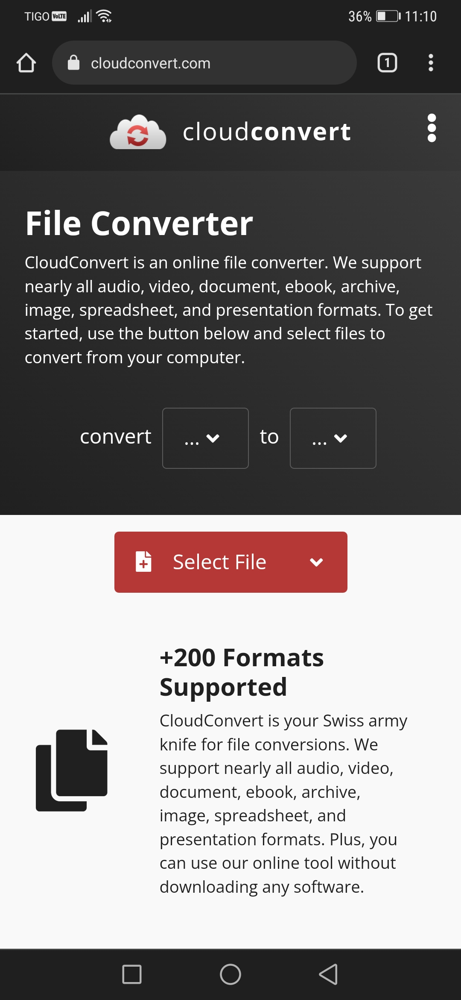

Cloud Convert
Cloudconvert.com The site has the option to convert several file formats. In the page you only need to select what extension from and to. Then select the file. Very easy to use, user doesnt have to search around the page to convert their files.